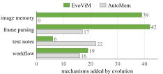

EvoViM: Recursively Self-Evolving Visual Agents for Exploration with Deferred Queries

A visual agent may see the evidence long before it hears the question. With EvoViM, it learns from practice by rewriting the code it uses to remember what it saw. Its model weights stay fixed.
What should an agent remember before it knows the question?
In DMV-Hard, an agent browses a catalog. Only later does it see a detail from a product photo and have to identify the original page.
We call this exploration with deferred queries. Can an agent learn both which visual evidence to save and how to use it once the question arrives?

Six environments
We built three environments where the question comes after exploration. We also tested three games where the goal is known from the start and the agent can use visual tools to choose its next move.
Deferred queries
Goal known from the start
Try a decision from a real episode
Pilot studies
We tried three memory designs with Claude Haiku 5.5. Could text preserve enough detail? Would a visual match recover where an object appeared? Could the model write the right tools before seeing a failure?
Compare evolved text memory, hand-designed visual memory and a one-shot program.
The EvoViM framework
The pilots showed how a program could keep the right image and still miss the answer. EvoViM lets the same frozen model inspect a failed episode, edit its visual program, and revise the playbook and scripts that guide its next edit.

Memory evolution in MC Gallery
Claude Haiku 5.5 tested each edit on the same two development walks, with eight questions per walk.
Across two development episodes, the agent answered 4 of 16 questions with notes, 13 with painting crops and 16 with doorway views.
Main results
On held-out episodes, EvoViM’s six-task average exceeded AutoMem’s by 31.3 to 47.6 percentage points, depending on the model. Each task counts equally.
Scores across generations
By generation 2, 13 of the 18 EvoViM programs had made at least 90% of their final gain over the starting program.
Evolved visual tools
EvoViM most often added ways to parse a frame and remember images. AutoMem most often added text notes.

- Visual matching
- Card Matching compares exposed card faces. DMV-Hard searches saved pages for the corner pattern in a product photo.
- Spatial recall
- MC Gallery locates a painting beside a numbered door. Poster Maze links a poster to a cell and wall.
- Sequential decision-making
- Tetris reads the board and plans a drop. Pac-Man updates its pellet map and finds the first move on a route.
Try EvoViM.
Run Card Matching offline with Python 3.10+ on macOS or Linux.
git clone https://github.com/Lewis-Xinyu/EvoViM.git
cd EvoViM
python3 -m venv .venv
. .venv/bin/activate
python -m pip install .
evovim demo --cards